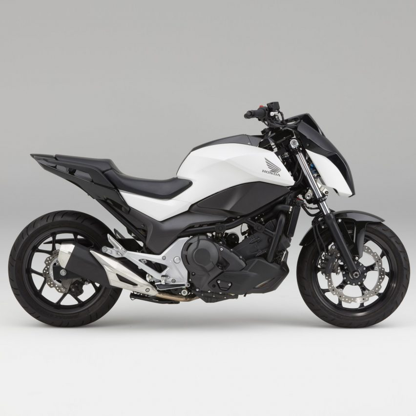

A motorcycle, often called a bike, motorbike, or cycle, is a two- or three-wheeled motor vehicle. Motorcycle design varies greatly to suit a range of different purposes: long distance travel, commuting, cruising, sport including racing, and off-road riding. Motorcycling is riding a motorcycle and related social activity such as joining a motorcycle club and attending motorcycle rallies.
In 1894, Hildebrand & Wolfmuller became the first series production motorcycle, and the first to be called a motorcycle. In 2014, the three top motorcycle producers globally by volume were Honda, Yamaha (both from Japan), and Hero MotoCorp (India).
The term motorcycle has different legal definitions depending on jurisdiction. There are three major types of motorcycle: street, off-road, and dual purpose. Within these types, there are many sub-types of motorcycles for different purposes. There is often a racing counterpart to each type, such as road racing and street bikes, or motocross and dirt bikes. Street bikes include cruisers, sportbikes, scooters and mopeds, and many other types. Off-road motorcycles include many types designed for dirt-oriented racing classes such as motocross and are not street legal in most areas. Dual purpose machines like the dual-sport style are made to go off-road but include features to make them legal and comfortable on the street as well. Each configuration offers either specialised advantage or broad capability, and each design creates a different riding posture. In some countries the use of pillions (rear seats) is restricted.
Please, follow the links below to learn more about Honda, Suzuki and BMV motobikes and history of motobikes.
HONDA |
SUZUKI |
BMV |